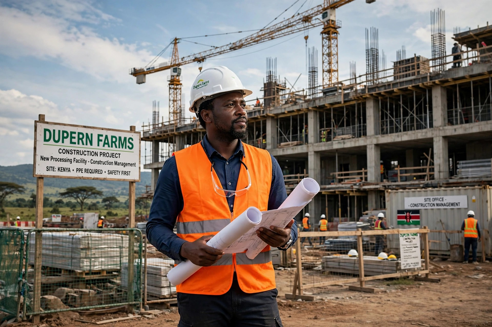

Featured Projects & Initiatives
Explore a selection of my technical, financial, and operational projects below.
1. Kisii County Energy Analytics & Solar Integration

Data-driven framework optimizing public facility energy consumption, featuring automated Power BI reporting and preliminary solar phase tracking.
2. Financial Modeling & Construction Management

End-to-end management of residential and commercial structural projects, integrating cost-benefit financial analysis, procurement tracking, and safety compliance.
3. Dupern Agribusiness Automation Hub
Custom analytics pipelines tracking livestock operations, inventory management, and multi-channel digital engagement for Dupern.
Project Summary Table
| Project Name | Domain | Key Impact / Metric | Technologies |
|---|---|---|---|
| County Energy Framework | Energy & Public Infrastructure | Optimized public facility reporting | Power BI, Advanced Excel |
| Construction Oversight | Financial & Civil Mgmt | Streamlined procurement & structural safety | PMP Frameworks, Safety Protocols |
| Dupern Agribusiness Hub | Agribusiness & AI | Automated livestock and supply tracking | Python, Pandas, Power BI |